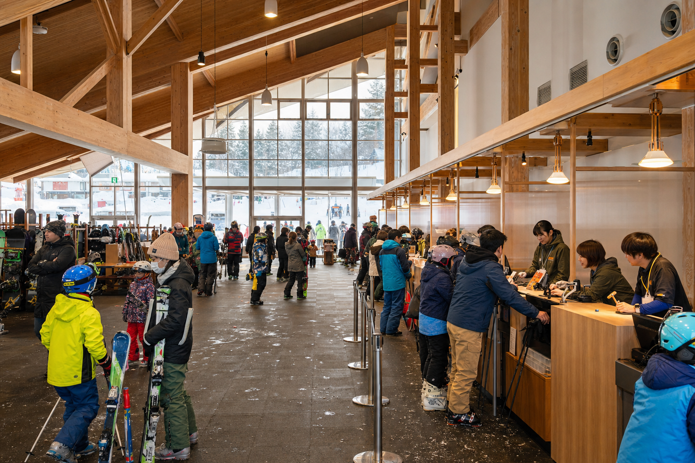
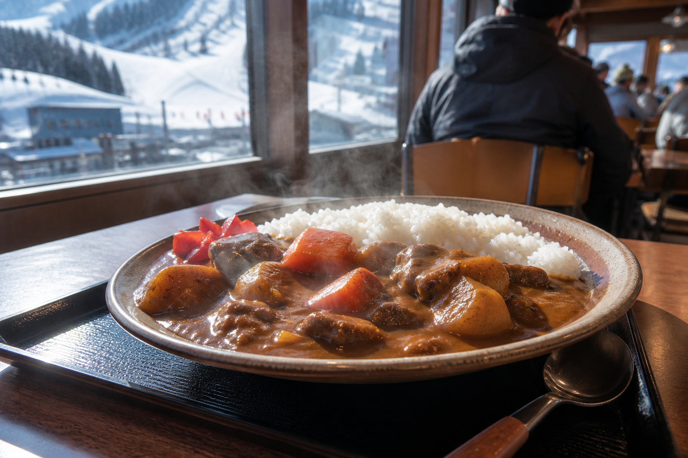

のんびり斜面 × コミュニティ感
利用者は「混雑が少なく家族で満喫」「スタッフの雰囲気が良い」と評価。大規模リゾートの喧騒より、整備の行き届いた8コースと地元に根ざしたおもてなし——旭川圏で気軽に通えるローカルヒルです。
料金・チケット北海道上川郡東川町 · キトウシ森林公園内
旭川空港15分——のんびりファミリー＆ナイター。
日券 ¥3,000 ナイター ¥500 8コース更新 6/13 9:00
クワッドリフト
運行中
メインリフト
ペアリフト
運行中
初心者・キッズゾーン
雪質
ファミリー向け
ゆったり整備 · 非混雑
ナイター
20:30まで
16:30〜 · ワンコイン¥500
Day & Night Value
日中は8コースをのんびり（大人日券¥3,000）、16:30からはワンコイン¥500でナイター滑り放題。ファミリーで朝から夜まで遊べる、キャンモア最大のお得コンボ——大規模ゲレンデの半額以下で一日満喫。


Nearby
ゲレンデから車で約15分の東川町は「写真の町」——ギャラリーとカフェが点在するアートな街並み。旭山動物園も約30分で、ファミリー半日〜一日の周遊に最適です。
滑走後は公式の温浴・宿泊割引も——キトウシ森林公園内のスパ＆ステイと組み合わせ、東川の夜景フォト散歩まで一日の旅に。
東川・旭山動物園 MAPOne-Day Trip
ファミリー向け——空港着後すぐ滑走、動物園、ナイターまで車移動中心で一日遊べる旭川圏の定番ルート。
FAMILY · NIGHT SKIING · HIGASHIKAWA01
旭川空港
レンタカーで約15分
02
キャンモア（昼間）
8コースをのんびり（¥3,000）
03
旭山動物園
車で約30分（任意）
04
ナイター
16:30〜ワンコイン¥500
05
東川町
フォトタウンでディナー（任意）
Access
旭川空港から車で約15分 · キトウシ森林公園内 · 営業 9:00〜20:30（ナイター 16:30〜）
TEL 0166-82-5001（キャンモアスキービレッジ）
受付・発券 8:50〜20:00 · 公式 canmore-ski.jp